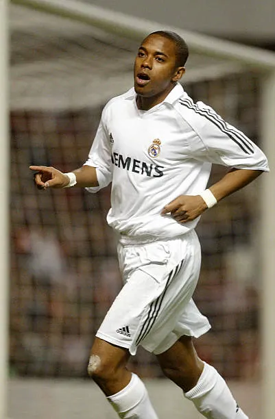

Robson de Souza (Robinho).
Em 2013, em uma boate em Milão, na Itália, o ex-jogador de futebol participou de um ato de violência sexual coletiva (estupro em grupo) contra uma jovem albanesa.
O caso foi investigado pelas autoridades judiciais italianas, que coletaram escutas telefônicas, depoimentos e laudos periciais que comprovaram a participação de Robinho e de outros envolvidos no crime. Após o trânsito em julgado da condenação na Justiça da Itália, a sentença foi homologada pelo Superior Tribunal de Justiça (STJ) no Brasil para que o cumprimento ocorresse em território nacional.
Condenado definitivamente pela justiça italiana a 9 anos de prisão em regime fechado. Após a decisão do STJ que validou a execução da pena no Brasil, Robinho foi preso em março de 2024 e encaminhado para o Complexo Penitenciário de Tremembé para iniciar o cumprimento de sua pena.